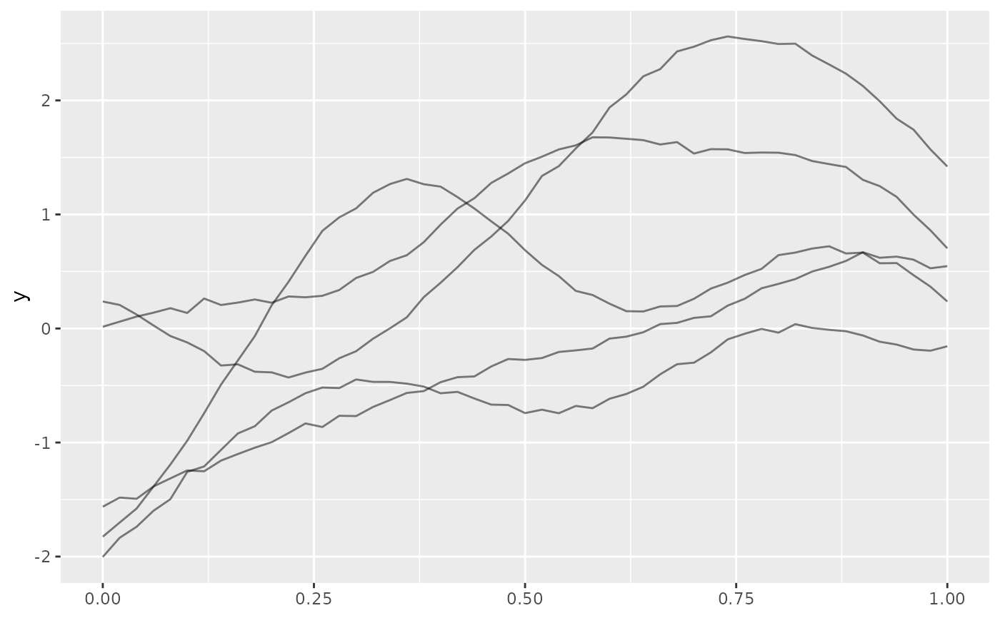
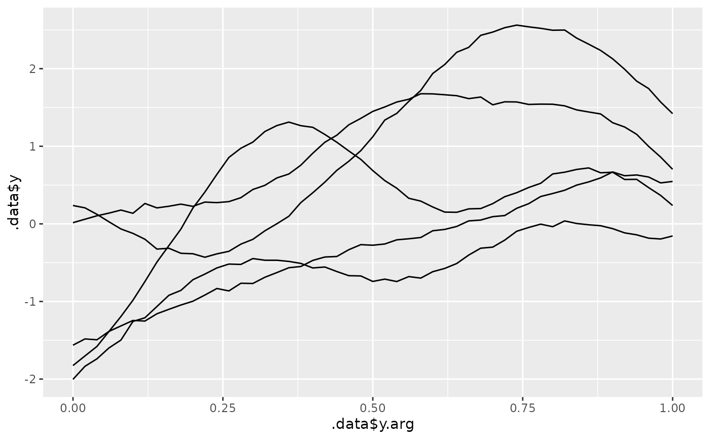

Convenient plotting methods for tf objects. autoplot() creates a
complete spaghetti plot, autolayer() creates a layer that can be
added to an existing ggplot2::ggplot() or tf_ggplot().
Arguments
- object
a
tfobject- ...
passed to
ggplot2::geom_line()
Value
A tf_ggplot() object for autoplot(), a ggplot2::layer() object for autolayer().
See also
Other tidyfun visualization:
ggcapellini,
gglasagna(),
ggspaghetti
Examples
# \donttest{
library(ggplot2)
f <- tf_rgp(5)
autoplot(f)
ggplot() + autolayer(f)

tf_ggplot() + autolayer(f)
#> ℹ `geom_spaghetti()` layer automatically translated for `tf_ggplot()`
#> • Use `geom_line()` with `aes(tf = f)` directly to silence this
#> This message is displayed once every 8 hours.

# }